| Characteristic | International Stroke Trial | DIG Trial | GUSTO-I Trial | VITamin D and OmegA-3 TriaL (VITAL) |
|---|---|---|---|---|
| Goal | Aspirin and heparin in acute ischaemic stroke | Digoxin for mortality and hospitalization in heart failure | Thrombolytic strategies in acute myocardial infarction | Marine omega-3 fatty acid, Vitamin D3, both or double-placebo in death from cardiovascular causes |
| Patients (n) | 19,435 | 6,800 | 41,021 | 25,435 |
| Years ran | 1991-1996 | 1991-1995 | 1990-1993 | 2011-2017 |
| Design | Open-label factorial RCT | Double-blind placebo-controlled RCT | Open-label RCT | a 2×2 factorial randomized controlled trial |
| Follow-up | 14 days and 6 months | Mean 37 months | 30 days | 5 years |
Predictive Approaches to Treatment Effect Heterogeneity
Supervisor: Dr. Neil O’Leary, School of Mathematical and Statistical Sciences, University of Galway
Tom Delany & Misgana Ojamo
Agenda
- Motivation & Methodology behind PATH
- Empirical Analyses using the PATH
- Simulation Evidence
- Implications and Future Directions
-
This slidedeck was built in
 using
using 
-
Our GitHub repository is linked in the footer

Treatment Effect Heterogeneity
Responses to a given treatment can vary considerably across individuals within a trial
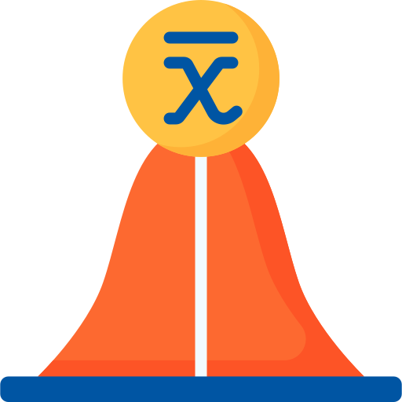
Average Effect
Randomised trials usually report one overall treatment estimate for the full study population.
Patient Differences
Demographics, disease severity, and baseline prognosis can all change the magnitude of treatment benefit.
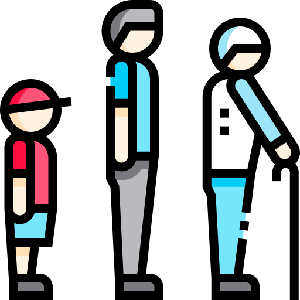
Subgroup Limitations
Traditional one-variable subgroup analyses are often underpowered and can miss multivariable response patterns.
Which patients benefit most, least, or even differently from the same treatment?
The PATH Statement - Kent et al., 2019
The PATH statement provides guidance for analysing and reporting predictive approaches to treatment effect heterogeneity.
1
What PATH Is
PATH is a reporting framework for predictive HTE analyses in randomised trials.
- It focuses on how treatment benefit varies across baseline patient profiles.
- Its aim is more individualised estimates of treatment benefit, not just one overall average.
2
Improvement
- PATH analyses allow for multivariate modelling of risk on the individual level
- It is better aligned with clinical decisions, where patients differ across several risk factors simultaneously.
Our Studies and Datasets
Why these studies? Large N, Availability, Contrasting Outcomes
Overall outcome of studies
Beneficial overall effect: aspirin reduced death or non-fatal recurrent stroke (OR 0.89).
No clear overall difference: all-cause mortality was similar for digoxin versus placebo (RR 0.99).
GUSTO-1
Beneficial overall effect: 30-day mortality was lower with accelerated tPA than with streptokinase (OR 0.85).
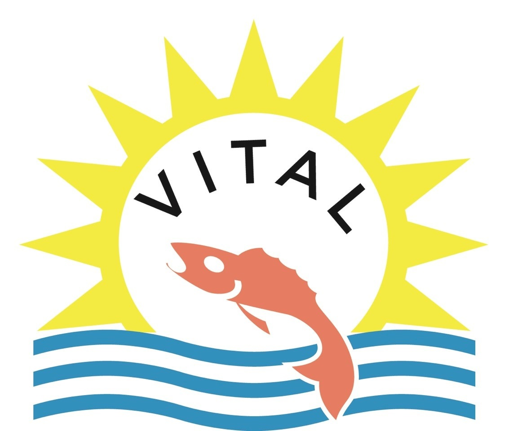
No clear overall difference: vitamin D supplementation did not lower cancer or cardiovascular events compared with placebo.
Path Workflow
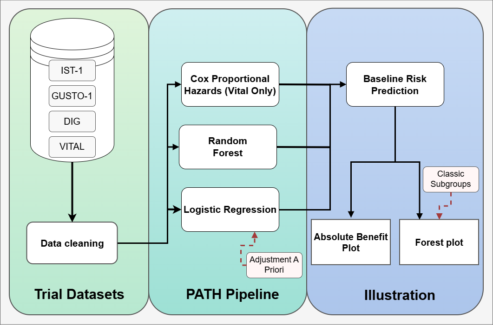
.png)
Stage 1: Prepare Datasets for Analysis.
Stage 2: Model Baseline risk using appropriate method.
Stage 3: Visualise Treatment Heterogeneity on Relative and Absolute Scales.
Logistic Regression Specification
IST-I: Model adjustment was informed by Thompson et al., 2015.
\[ \text{logit}\big(P(\text{death14}_i = 1)\big) = \beta_0 + \beta_1 \text{AGE}_i + \beta_2 \text{consc}_i \\ \qquad + \beta_3 \text{ct\infarct}_i + \beta_4 \text{motor}_i + \beta_5 \text{afib}_i \]
GUSTO-I: model adjustment was informed from Steyeberg et al., 2000.
\[ \text{sysbp}_{\text{maxed},i} = \min(\text{sysbp}_i, 120) \]
\[ \text{logit}\big(P(\text{day30}_i = 1)\big) = \beta_0 + \beta_1 \text{tpa}_i + \beta_2 \text{age}_i + \beta_3 \text{Killip}_i \\ \qquad + \beta_4 \text{sysbp}_{\text{maxed},i} + f(\text{pulse}_i) + \beta_5 \text{pmi}_i + \beta_6 \text{miloc}_i \]
Random Forest Specification
- The random forest models were fit using all prognostic baseline variables available in each dataset for risk stratification.
- This flexible strategy was informed by ensemble-learning approaches in the IST trial Hwangbo et al. 2022.
Cox Proportional Hazard Model Specification
VITAL: Model adjustment was informed by Caldeira et al., 2022.
\[ h(t \mid X_i) = h_0(t)\exp\Big( \beta_1 \text{age}_i + \beta_2 \text{bmi}_i + \beta_3 \text{sex}_i + \beta_4 \text{htnmed}_i\\ \qquad + \beta_5 \text{currsmk}_i + \beta_6 \text{diabetes}_i + \beta_7 \text{familyHist}_i \Big) \]
Relative vs Absolute Benefit
Relative Effect Illustration
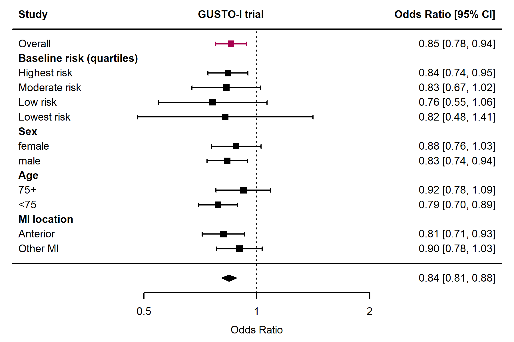
- Risk-based quartiles suggest a broadly similar relative effect, but lower-risk groups have wider confidence intervals.
Relative Effect Results
DIG
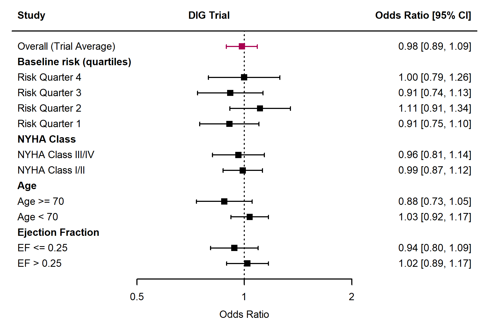
IST-1
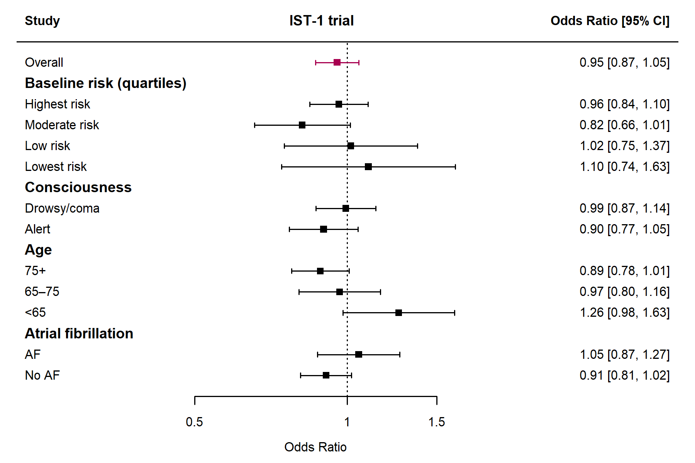
VITAL Relative Effect Results
VITAL: Omega-3
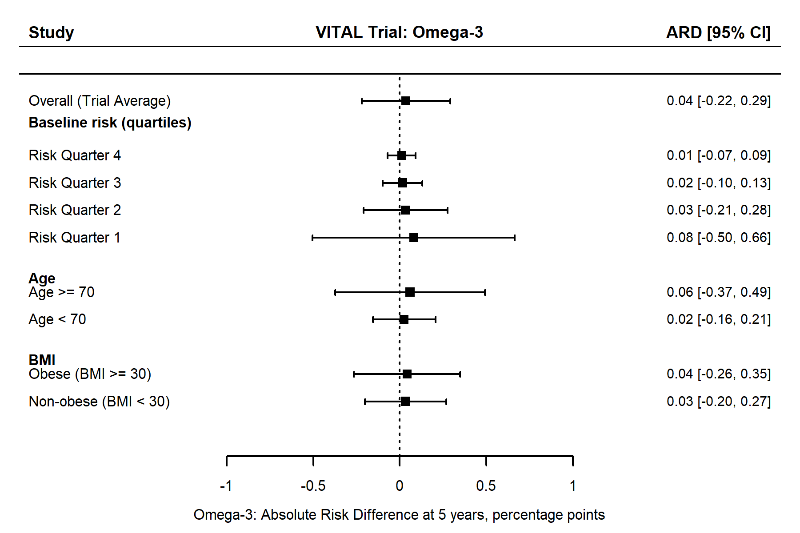
VITAL: Vitamin D
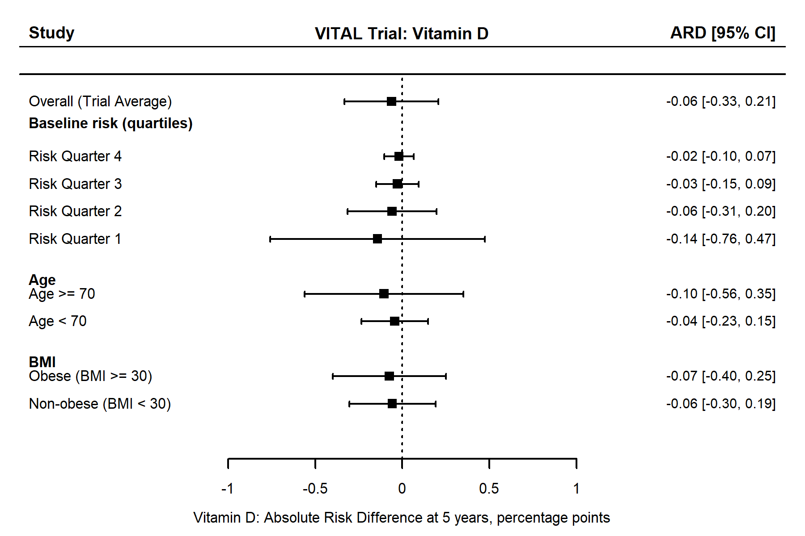
Absolute treatment effect
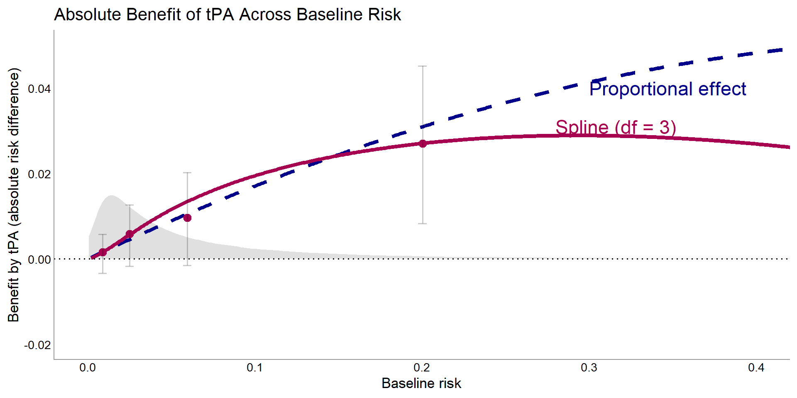
- In the GUSTO trial, absolute treatment benefit increases as baseline risk increases, with larger gains concentrated in higher-risk patients.
- Random forest stratification produced similar quartiles across all studies
Absolute Benefit Results
IST
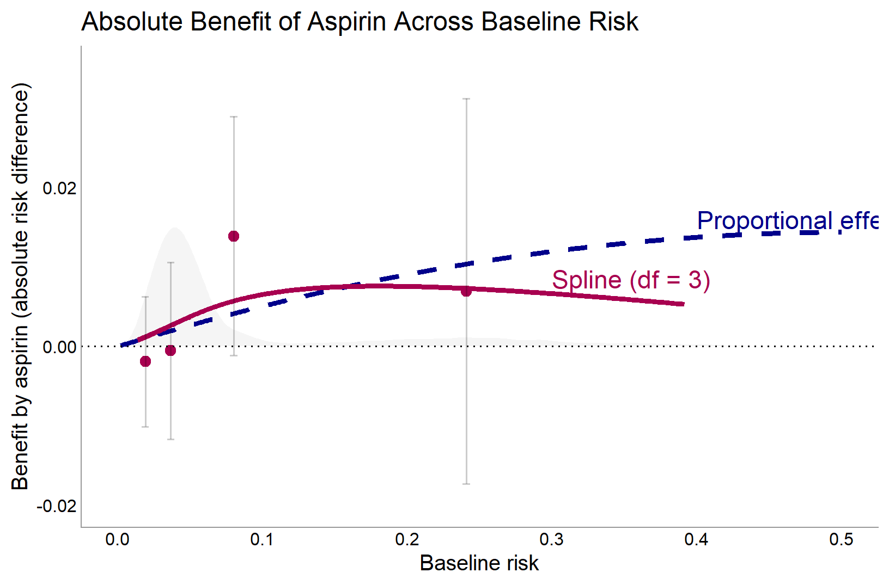
DIG
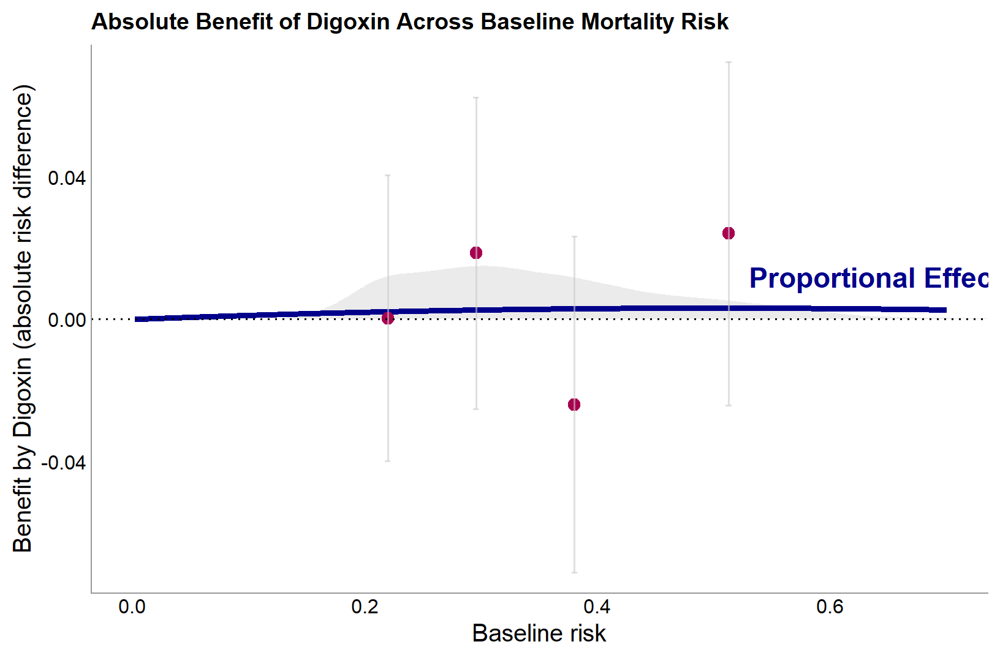
VITAL Absolute Benefit Results
VITAL: Omega-3
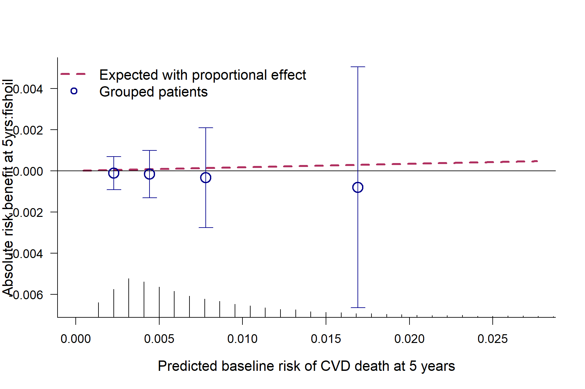
VITAL: Vitamin D
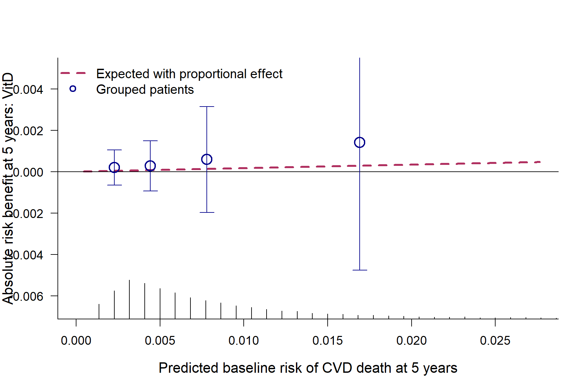
Simulation Study Design Morris et al. 2019
ADEMP is a structured way to summarise a simulation study through its Aim, Data-generating mechanism, Estimand, Methods, and Performance measure.
A
Aim
Evaluate whether risk-based interaction testing falsely detects treatment effect heterogeneity under the null
D
Data-Generating Mechanism
Binary outcomes were generated from:
\[ \text{logit}\{P(Y_i = 1)\} = -2 - 0.5Z_i + 0.5X_i \]
\[ X_j \sim N(0,1), \qquad Z_i \sim \text{Bernoulli}(0.5) \]
E
Estimand
The ground truth under the null was:
\[ H_0:\beta_{Z \times lp}=0 \]
Simulation Conditions
- Sample sizes varied across n = 50, 75, 100, 150, 200, 300, 500, 750,1000, 2000, 5000.
- The number of prognostic covariates varied from p = 1 to p = 10.
- Each dataset was split 50:50 into training and test sets.
ADEMP: Methods and Performance
M
Methods
Risk modelling and likelihood ratio interaction testing compared:
\[ Y_{\text{null}} \sim Z + lp \]
versus
\[ Y_{\text{null}} \sim Z + lp + Z:lp \]
P
Performance Measure
Empirical rejection rate at α = 0.05.
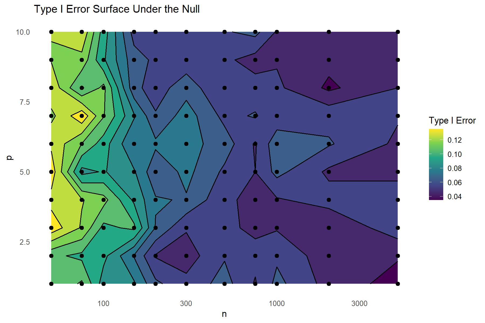
Ongoing Work
- Extend the Monte Carlo framework to assess power, examining how reliably interaction effects are detected as both sample size and effect strength vary.
\[ \text{logit}\{P(Y_i = 1)\} = -2 -0.5Z_i + 0.5X_i + \gamma(Z_iX_i) \]
- Complete the written interpretation of the simulation and empirical results, including implications, limitations, and presentation of the final figures.
Implications and Conclusion
Dataset Requirements
PATH is most feasible in large, well-characterised datasets where baseline risk and subgroup differences can be estimated reliably.
Interaction Strength
The usefulness of PATH also depends on interaction strength: when heterogeneity is weak, detection may remain difficult even in strong datasets.
Implementation
Implementation may depend on future reporting expectations from major regulators, but there is currently no routine regulatory requirement for PATH analyses.
References
- Kent DM, van Klaveren D, Paulus JK, et al. The Predictive Approaches to Treatment Effect Heterogeneity (PATH) Statement: Explanation and Elaboration. Ann Intern Med. 2020;172(1):W1-W25.
- Morris TP, White IR, Crowther MJ. Using simulation studies to evaluate statistical methods. Stat Med. 2019;38(11):2074-2102.
- International Stroke Trial Collaborative Group. The International Stroke Trial (IST): a randomised trial of aspirin, subcutaneous heparin, both, or neither among 19,435 patients with acute ischaemic stroke. Lancet. 1997.
- The Digitalis Investigation Group. The effect of digoxin on mortality and morbidity in patients with heart failure. N Engl J Med. 1997;336:525-533.
- The GUSTO Investigators. An international randomized trial comparing four thrombolytic strategies for acute myocardial infarction. N Engl J Med. 1993;329:673-682.
- Manson JE, Cook NR, Lee IM, et al. Marine n-3 fatty acids and prevention of cardiovascular disease and cancer. N Engl J Med. 2019;380:23-32.
- Caldeira D, Costa J, Fernandes RM, et al. Analysis of the VITAL cohort. Eur J Clin Nutr. 2022.
- Thompson DDO, et al. Adjustment model specification for 14-day mortality in the International Stroke Trial. 2015.
- Steyerberg EW, et al. Adjustment model specification in the GUSTO-I trial. 2000.
- Hwangbo H, et al. Ensemble-learning approaches for treatment heterogeneity analysis in the IST trial. Sci Rep. 2022;12.